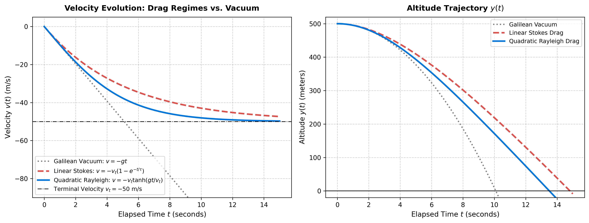
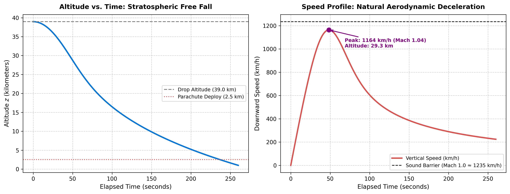
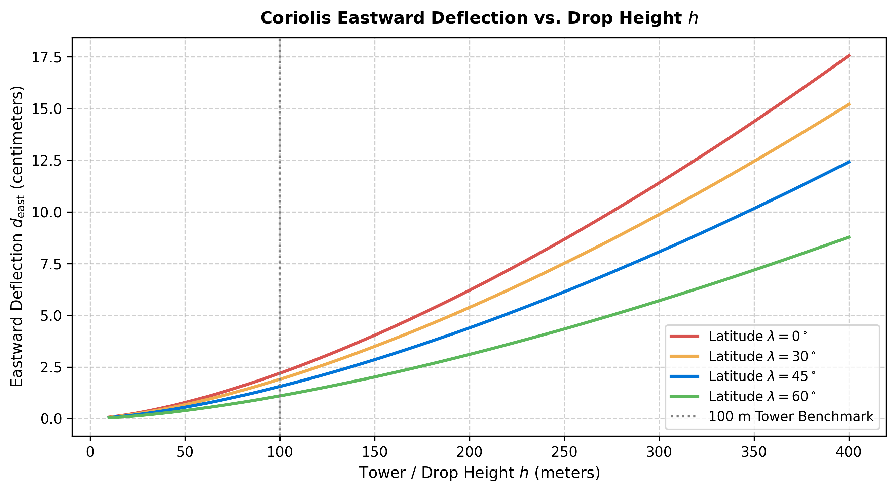

flowchart TD
G["0. Galilean Baseline (Ideal Vacuum)<br/>m a = -m g"] --> B["1. Archimedes Buoyancy<br/>m a = -m g_eff"]
B --> S["2. Stokes Linear Viscous Drag (Re ≪ 1)<br/>m a = -m g_eff - b v"]
B --> R["3. Rayleigh Quadratic Turbulent Drag (Re ≫ 10³)<br/>m a = -m g_eff + ½ ρ C_d A v²"]
R --> H["4. Stratospheric Vertical Gradients<br/>Variable ρ(z) & g(z)"]
H --> C["5. Rotating Planetary Non-Inertial Frame<br/>Coriolis Deflection -2m (Ω × v)"]
Free Fall Beyond Idealization: Air Resistance, Terminal Velocity, and Real-World Dissipative Corrections
A progressive escalation from vacuum ballistic motion to linear drag, quadratic turbulence, buoyancy, barometric density decay, and Coriolis deflection.
Preprints
Physics
Classical Mechanics
Kinematics
Dynamics
Fluid Dynamics
A comprehensive applied mechanics treatise expanding textbook free fall into real-world reality: Archimedes buoyancy, Stokes linear drag, Rayleigh quadratic turbulence, hyperbolic velocity solutions, stratosphere density decay, altitude-dependent gravity, and the Coriolis eastward deflection.
NotePreprint / Working Draft
This article is published under the Preprints category. It represents an active paper investigating the progressive hierarchy of non-ideal dissipative, aerodynamic, and planetary corrections to gravitational free fall.
1. Introduction: The Collapse of the Galilean Vacuum
In introductory physics, the motion of falling bodies is almost universally modeled through Galileo’s famous vacuum idealization:
\[m \frac{d^2 y}{dt^2} = -m g \implies \ddot{y} = -g \tag{1}\]
Equation (1) asserts that all objects—regardless of mass, shape, or density—accelerate downward at the exact same constant rate \(g \approx 9.81\text{ m/s}^2\). In 1971, Apollo 15 astronaut David Scott demonstrated this principle dramatically on the airless surface of the Moon, dropping a \(1.32\text{ kg}\) geological hammer and a \(0.03\text{ kg}\) falcon feather simultaneously; both struck the lunar regolith in unison.
However, inside a planetary atmosphere, the Galilean idealization collapses. A skydiver in Earth’s troposphere does not accelerate indefinitely; a falling mist droplet does not crash at hundreds of kilometers per hour; and a stone dropped from a high tower does not strike the earth directly below its plumb line.
The real physical world introduces a hierarchy of dissipative forces, thermodynamic couplings, and rotating-frame inertial effects:
2. Correction 1: Hydrodynamic Buoyancy (Archimedes’ Principle)
Whenever a solid body of mass \(m\), volume \(V\), and average density \(\rho_b = m/V\) is submerged in a fluid of ambient density \(\rho_f\), the fluid exerts an upward buoyant force equal to the weight of the displaced fluid:
\[F_{\text{buoyancy}} = +\rho_f V g \hat{\mathbf{j}} \tag{2}\]
flowchart TD
subgraph Body["Hydrodynamic Free-Body Equilibrium"]
direction TB
F_b["▲ Upward Buoyant Force: F_buoyancy = ρ_fluid · V · g"]
CG["● Center of Mass (m, V)"]
W["▼ Downward Gravitational Weight: W = m · g"]
end
Writing the net static gravitational force:
\[F_{\text{net}} = -m g + \rho_f V g = -m g \left( 1 - \frac{\rho_f V}{m} \right) = -m g \left( 1 - \frac{\rho_f}{\rho_b} \right) \tag{3}\]
We define the effective gravitational acceleration \(g_{\text{eff}}\):
\[g_{\text{eff}} = g \left( 1 - \frac{\rho_f}{\rho_b} \right) \tag{4}\]
When Does Buoyancy Matter?
| Physical System | Body Density \(\rho_b\) | Fluid Density \(\rho_f\) | Effective Gravity \(g_{\text{eff}}\) | Buoyancy Correction Magnitude |
|---|---|---|---|---|
| Steel sphere in air | \(7{,}800\text{ kg/m}^3\) | \(1.2\text{ kg/m}^3\) | \(0.99985 \, g\) | \(0.015\%\) (Completely negligible) |
| Styrofoam bead in air | \(15\text{ kg/m}^3\) | \(1.2\text{ kg/m}^3\) | \(0.92000 \, g\) | \(8.0\%\) (Moderate engineering impact) |
| Sand grain in water | \(2{,}600\text{ kg/m}^3\) | \(1{,}000\text{ kg/m}^3\) | \(0.61538 \, g\) | \(38.5\%\) (Dominant control of settling) |
| Helium balloon in air | \(0.18\text{ kg/m}^3\) | \(1.2\text{ kg/m}^3\) | \(-5.6667 \, g\) | Upward acceleration (Aerostat flight) |
3. Correction 2: Linear Viscous Drag (The Stokes Regime, \(\mathrm{Re} \ll 1\))
When a body moves through a fluid at very low speeds, or when the body’s characteristic dimension is microscopic, fluid inertia is negligible compared to fluid viscous shear. This is characterized by a low Reynolds number:
\[\mathrm{Re} = \frac{\rho_f v D}{\mu} \ll 1 \tag{5}\]
Under this creeping flow regime, the resistive drag force is strictly linear in velocity:
\[F_{\text{drag}} = -b v \tag{6}\]
For a smooth sphere of diameter \(D\) in a fluid with dynamic viscosity \(\mu\), George Gabriel Stokes famously derived the drag constant:
\[b = 3 \pi \mu D \tag{7}\]
Analytical Solution of the Linear Free-Fall ODE
Taking downward as negative and letting \(v(t) = \dot{y}(t) \le 0\):
\[m \frac{dv}{dt} = -m g_{\text{eff}} - b v \iff \frac{dv}{dt} + \frac{b}{m} v = -g_{\text{eff}} \tag{8}\]
We define two fundamental physical parameters:
\[\tau = \frac{m}{b} \quad (\text{Characteristic Velocity Relaxation Time}), \qquad v_t = \frac{m g_{\text{eff}}}{b} = g_{\text{eff}} \tau \quad (\text{Terminal Speed}) \tag{9}\]
Equation (8) is a first-order linear ordinary differential equation. Multiplying by the integrating factor \(e^{t/\tau}\):
\[\frac{d}{dt} \left( v(t) e^{t/\tau} \right) = -g_{\text{eff}} e^{t/\tau}\]
Integrating from initial velocity \(v(0) = v_0\):
\[v(t) e^{t/\tau} - v_0 = -g_{\text{eff}} \tau \left( e^{t/\tau} - 1 \right) = -v_t \left( e^{t/\tau} - 1 \right)\]
\[v(t) = -v_t + \left( v_0 + v_t \right) e^{-t/\tau} \tag{10}\]
For a body dropped from rest (\(v_0 = 0\)):
\[v(t) = -v_t \left( 1 - e^{-t/\tau} \right) \tag{11}\]
Position Trajectory via Integration
Integrating velocity \(v(t) = \frac{dy}{dt}\) from initial altitude \(y(0) = y_0\):
\[y(t) = y_0 - \int_0^t v_t \left( 1 - e^{-t'/\tau} \right) dt' = y_0 - v_t t + v_t \int_0^t e^{-t'/\tau} dt'\]
\[y(t) = y_0 - v_t t + v_t \tau \left( 1 - e^{-t/\tau} \right) \tag{12}\]
Asymptotic Limiting Analysis
Let us subject Equation (12) to the extreme-case torture test:
- Short-Time Asymptote (\(t \ll \tau\)): Taylor expanding the exponential \(e^{-t/\tau} = 1 - \frac{t}{\tau} + \frac{t^2}{2\tau^2} - \frac{t^3}{6\tau^3} + \dots\): \[y(t) = y_0 - v_t t + v_t \tau \left[ \frac{t}{\tau} - \frac{t^2}{2\tau^2} + \frac{t^3}{6\tau^3} \right] = y_0 - v_t t + v_t t - \frac{v_t}{2\tau} t^2 + \mathcal{O}(t^3)\] Recalling that \(v_t / \tau = g_{\text{eff}}\): \[y(t) \approx y_0 - \frac{1}{2} g_{\text{eff}} t^2 \tag{13}\] Result: In the limit of early times, linear air resistance is completely negligible, and the solution collapses identically into Galileo’s vacuum parabola!
- Long-Time Asymptote (\(t \gg \tau\)): The exponential term decays to zero (\(e^{-t/\tau} \to 0\)): \[y(t) \to (y_0 + v_t \tau) - v_t t \tag{14}\] The trajectory becomes a pure straight line of constant terminal velocity \(-v_t\). Acceleration has vanished completely.
4. Correction 3: Quadratic Turbulent Drag (The Rayleigh Regime, \(\mathrm{Re} \gg 10^3\))
For macroscopic objects falling in air—such as raindrops larger than \(1\text{ mm}\), baseballs, vehicles, and skydivers—the Reynolds number is high (\(\mathrm{Re} = 10^4 \text{ to } 10^7\)).
In this regime, viscous skin friction is eclipsed by form drag caused by turbulent flow separation and wake pressure deficits. Lord Rayleigh formulated the drag force as proportional to velocity squared:
\[F_{\text{drag}} = -\frac{1}{2} \rho_f C_d A v |v| \tag{15}\]
Where \(C_d\) is the dimensionless drag coefficient, \(A\) is the projected cross-sectional area, and \(|v|\) ensures drag always opposes the instantaneous direction of motion.
Downward Motion from Rest
For downward motion (\(v \le 0\)), the drag acts upward (\(+v^2\)):
\[m \frac{dv}{dt} = -m g_{\text{eff}} + \frac{1}{2} \rho_f C_d A v^2 \tag{16}\]
At terminal velocity \(v_t\), acceleration ceases (\(\frac{dv}{dt} = 0\)):
\[m g_{\text{eff}} = \frac{1}{2} \rho_f C_d A v_t^2 \implies v_t = \sqrt{\frac{2 m g_{\text{eff}}}{\rho_f C_d A}} \tag{17}\]
Rewriting Equation (16) using \(v_t\):
\[\frac{dv}{dt} = -g_{\text{eff}} \left( 1 - \frac{v^2}{v_t^2} \right) \tag{18}\]
Exact Analytical Solution via Separation of Variables
\[\int_0^{v(t)} \frac{dv'}{1 - \left(\frac{v'}{v_t}\right)^2} = -g_{\text{eff}} \int_0^t dt'\]
Recall the standard integral \(\int \frac{dx}{1 - x^2} = \operatorname{arctanh}(x)\) for \(|x| < 1\):
\[v_t \operatorname{arctanh}\left( \frac{v(t)}{v_t} \right) = -g_{\text{eff}} t \implies \frac{v(t)}{v_t} = \tanh\left( -\frac{g_{\text{eff}} t}{v_t} \right)\]
Because \(\tanh(-x) = -\tanh(x)\):
\[v(t) = -v_t \tanh\left( \frac{g_{\text{eff}} t}{v_t} \right) \tag{19}\]
Exact Closed-Form Position Trajectory
Integrating Equation (19) using \(\int \tanh(u)\,du = \ln(\cosh u)\):
\[y(t) = y_0 - v_t \int_0^t \tanh\left( \frac{g_{\text{eff}} t'}{v_t} \right) dt' = y_0 - \frac{v_t^2}{g_{\text{eff}}} \ln\left[ \cosh\left( \frac{g_{\text{eff}} t}{v_t} \right) \right] \tag{20}\]
Show Python generation code
import numpy as np
import matplotlib.pyplot as plt
# Physical constants
g = 9.81
vt = 50.0 # Matched terminal speed in m/s (~180 km/h for skydiver)
tau = vt / g # Relaxation time (~5.1 s)
y0 = 500.0 # Drop height in meters
# Time grid
t = np.linspace(0, 15.0, 400)
# 1. Galilean Vacuum
v_vac = -g * t
y_vac = y0 - 0.5 * g * t**2
# 2. Linear Stokes Drag
v_lin = -vt * (1.0 - np.exp(-t / tau))
y_lin = y0 - vt * t + vt * tau * (1.0 - np.exp(-t / tau))
# 3. Quadratic Rayleigh Drag
v_quad = -vt * np.tanh(g * t / vt)
y_quad = y0 - (vt**2 / g) * np.log(np.cosh(g * t / vt))
# Plotting
fig, (ax1, ax2) = plt.subplots(1, 2, figsize=(13, 5), dpi=150)
# Panel 1: Velocity
ax1.plot(t, v_vac, ':', color='gray', linewidth=2, label='Galilean Vacuum: $v = -gt$')
ax1.plot(t, v_lin, '--', color='#d9534f', linewidth=2.5, label='Linear Stokes: $v = -v_t(1 - e^{-t/\\tau})$')
ax1.plot(t, v_quad, '-', color='#0275d8', linewidth=2.5, label='Quadratic Rayleigh: $v = -v_t\\tanh(gt/v_t)$')
ax1.axhline(-vt, color='black', linestyle='-.', linewidth=1, label=f'Terminal Velocity $v_t = -{vt:.0f}$ m/s')
ax1.set_title('Velocity Evolution: Drag Regimes vs. Vacuum', fontsize=12, fontweight='bold', pad=10)
ax1.set_xlabel('Elapsed Time $t$ (seconds)', fontsize=11)
ax1.set_ylabel('Velocity $v(t)$ (m/s)', fontsize=11)
ax1.set_ylim(-90, 5)
ax1.legend(loc='lower left', frameon=True, fontsize=9)
ax1.grid(True, linestyle='--', alpha=0.6)
# Panel 2: Altitude
ax2.plot(t, y_vac, ':', color='gray', linewidth=2, label='Galilean Vacuum')
ax2.plot(t, y_lin, '--', color='#d9534f', linewidth=2.5, label='Linear Stokes Drag')
ax2.plot(t, y_quad, '-', color='#0275d8', linewidth=2.5, label='Quadratic Rayleigh Drag')
ax2.axhline(0, color='black', linestyle='-', linewidth=1)
ax2.set_title('Altitude Trajectory $y(t)$', fontsize=12, fontweight='bold', pad=10)
ax2.set_xlabel('Elapsed Time $t$ (seconds)', fontsize=11)
ax2.set_ylabel('Altitude $y(t)$ (meters)', fontsize=11)
ax2.set_ylim(-20, 520)
ax2.legend(loc='upper right', frameon=True, fontsize=9)
ax2.grid(True, linestyle='--', alpha=0.6)
plt.tight_layout()
plt.show()
The Upward-Flight Asymmetry: Breaking Time-Reversal Symmetry
In vacuum kinematics, ascending and descending paths are strictly symmetric: \(t_{\text{ascent}} = t_{\text{descent}}\).
Under quadratic drag, this symmetry is completely shattered. During upward ascent (\(v > 0\)), gravity and drag act in the same downward direction:
\[m \frac{dv}{dt} = -m g_{\text{eff}} - \frac{1}{2} \rho C_d A v^2 = -g_{\text{eff}} \left( 1 + \frac{v^2}{v_t^2} \right) \tag{21}\]
Separating variables using \(\int \frac{dx}{1 + x^2} = \arctan(x)\):
\[\int_{v_0}^{v(t)} \frac{dv'}{1 + (v'/v_t)^2} = -g_{\text{eff}} t \implies \arctan\left(\frac{v}{v_t}\right) - \arctan\left(\frac{v_0}{v_t}\right) = -\frac{g_{\text{eff}} t}{v_t}\]
\[v(t) = v_t \tan\left[ \arctan\left(\frac{v_0}{v_t}\right) - \frac{g_{\text{eff}} t}{v_t} \right] \tag{22}\]
Setting \(v(t_{\text{apex}}) = 0\) yields the ascent time:
\[t_{\text{ascent}} = \frac{v_t}{g_{\text{eff}}} \arctan\left( \frac{v_0}{v_t} \right) \tag{23}\]
Compare this to the descent time required to fall back from that exact same apex altitude \(H\) to the ground under Equation (20):
\[t_{\text{descent}} = \frac{v_t}{g_{\text{eff}}} \operatorname{arccosh}\left( \exp\left( \frac{g_{\text{eff}} H}{v_t^2} \right) \right) \tag{24}\]
Because energy was irreversibly dissipated into heat during ascent, the projectile reaches a lower peak height, and \(t_{\text{ascent}} < t_{\text{descent}}\). Dissipation breaks the time-reversal invariance (\(T\)-symmetry) of the governing equations.
5. Correction 4: Stratospheric Drops (Barometric Density Decay and Altitude-Dependent Gravity)
On October 14, 2012, Austrian skydiver Felix Baumgartner stepped out of a helium capsule at an altitude of \(z_0 = 38{,}969\text{ m}\) (\(127{,}851\text{ ft}\)). During his free fall, he reached a maximum speed of \(v_{\text{max}} = 1{,}357.6\text{ km/h}\) (Mach \(1.25\)), becoming the first human to break the sound barrier without vehicular propulsion.
Why did Baumgartner reach Mach \(1.25\) and subsequently decelerate before deploying his parachute?
The Two Coupled Vertical Gradients
- Barometric Density Decay: In an isothermal atmosphere of scale height \(H \approx 8{,}500\text{ m}\): \[\rho(z) = \rho_0 \exp\left( -\frac{z}{H} \right) \tag{25}\] At \(39\text{ km}\), air density is \(\rho \approx 1.2 \times e^{-39000/8500} \approx 0.012\text{ kg/m}^3\)—less than \(1\%\) of sea-level density!
- Inverse-Square Gravitational Field: By Newton’s law of universal gravitation: \[g(z) = g_0 \left( \frac{R_E}{R_E + z} \right)^2 \approx g_0 \left( 1 - \frac{2z}{R_E} \right) \tag{26}\] At \(39\text{ km}\), \(g \approx 9.81 \times (6371 / 6410)^2 \approx 9.69\text{ m/s}^2\) (a \(1.2\%\) reduction).
The Dynamic Terminal Velocity
Because terminal velocity scales as \(v_t(z) = \sqrt{\frac{2 m g(z)}{\rho(z) C_d A}}\), substituting Equation (25) yields:
\[v_t(z) \propto \exp\left( \frac{z}{2H} \right) \tag{27}\]
At \(39\text{ km}\), the local terminal velocity is roughly \(\sqrt{100} = 10\) times higher than at sea level (\(v_t \approx 500\text{ m/s} \approx 1800\text{ km/h}\)). As Baumgartner plunged into the denser troposphere, \(\rho(z)\) increased exponentially, compressing \(v_t(z)\) down to \(\sim 55\text{ m/s}\) (\(200\text{ km/h}\)).
Show Python generation code
import numpy as np
import matplotlib.pyplot as plt
from scipy.integrate import solve_ivp
# Stratospheric physical parameters
m = 118.0 # Skydiver + pressure suit mass (kg)
Cd = 0.7 # Delta-position body drag coefficient
A = 0.8 # Cross-sectional area (m^2)
H_scale = 8500.0 # Atmospheric scale height (m)
rho0 = 1.225 # Sea level air density (kg/m^3)
R_earth = 6371000.0 # Earth radius in meters
g0 = 9.80665
def atmosphere_dynamics(t, state):
z, v = state # z: altitude (m), v: vertical velocity (m/s, negative downward)
# Altitude-dependent density and gravity
rho = rho0 * np.exp(-max(z, 0) / H_scale)
g_z = g0 * (R_earth / (R_earth + max(z, 0)))**2
# Drag force (opposes velocity)
f_drag = 0.5 * rho * Cd * A * v**2 * np.sign(-v)
# Equations of motion: dz/dt = v, dv/dt = -g + f_drag/m
dzdt = v
dvdt = -g_z + f_drag / m
return [dzdt, dvdt]
# Integrate from 38,969 m drop until chute deployment at 2,500 m
z_init = 38969.0
v_init = 0.0
sol = solve_ivp(atmosphere_dynamics, [0, 260], [z_init, v_init], max_step=0.2, t_eval=np.linspace(0, 260, 1000))
# Speed in km/h and Mach estimate (speed of sound ~ 300-340 m/s depending on temp)
speed_kmh = np.abs(sol.y[1]) * 3.6
mach_est = np.abs(sol.y[1]) / 310.0
fig, (ax1, ax2) = plt.subplots(1, 2, figsize=(13, 5), dpi=150)
# Altitude plot
ax1.plot(sol.t, sol.y[0] / 1000.0, '-', color='#0275d8', linewidth=2.5)
ax1.axhline(z_init / 1000.0, linestyle='--', color='gray', label=f'Drop Altitude ({z_init/1000:.1f} km)')
ax1.axhline(2.5, linestyle=':', color='#d9534f', label='Parachute Deploy (2.5 km)')
ax1.set_title('Altitude vs. Time: Stratospheric Free Fall', fontsize=12, fontweight='bold', pad=10)
ax1.set_xlabel('Elapsed Time (seconds)', fontsize=11)
ax1.set_ylabel('Altitude $z$ (kilometers)', fontsize=11)
ax1.legend(frameon=True, fontsize=9)
ax1.grid(True, linestyle='--', alpha=0.6)
# Velocity / Mach plot
ax2.plot(sol.t, speed_kmh, '-', color='#d9534f', linewidth=2.5, label='Vertical Speed (km/h)')
ax2.axhline(1235.0, color='black', linestyle='--', linewidth=1.2, label='Sound Barrier (Mach 1.0 ≈ 1235 km/h)')
max_idx = np.argmax(speed_kmh)
t_peak = sol.t[max_idx]
v_peak = speed_kmh[max_idx]
z_peak = sol.y[0][max_idx] / 1000.0
ax2.plot(t_peak, v_peak, 'o', color='purple', markersize=8)
ax2.annotate(f'Peak: {v_peak:.0f} km/h (Mach {mach_est[max_idx]:.2f})\nAltitude: {z_peak:.1f} km',
xy=(t_peak, v_peak), xytext=(t_peak + 20, v_peak - 150),
arrowprops=dict(arrowstyle='->', color='purple', lw=1.5),
fontsize=9, fontweight='bold', color='purple')
ax2.set_title('Speed Profile: Natural Aerodynamic Deceleration', fontsize=12, fontweight='bold', pad=10)
ax2.set_xlabel('Elapsed Time (seconds)', fontsize=11)
ax2.set_ylabel('Downward Speed (km/h)', fontsize=11)
ax2.legend(loc='lower right', frameon=True, fontsize=9)
ax2.grid(True, linestyle='--', alpha=0.6)
plt.tight_layout()
plt.show()
6. Correction 5: The Coriolis Eastward Deflection on a Rotating Earth
If a dense lead cannonball is dropped from the top of a tall tower in vacuum (or negligible drag), does it hit the ground at the exact point vertically below the release site?
No. Because the Earth rotates from west to east with angular speed \(\Omega \approx 7.2921 \times 10^{-5}\text{ rad/s}\), an observer attached to the rotating Earth resides in a non-inertial reference frame.
The Non-Inertial Equation of Motion
In a frame rotating with constant angular velocity vector \(\boldsymbol{\Omega}\):
\[\mathbf{a}_{\text{apparent}} = \mathbf{g}_{\text{eff}} - 2 \left( \boldsymbol{\Omega} \times \mathbf{v} \right) - \boldsymbol{\Omega} \times \left( \boldsymbol{\Omega} \times \mathbf{r} \right) \tag{28}\]
Where \(-2(\boldsymbol{\Omega} \times \mathbf{v})\) is the Coriolis acceleration, and \(-\boldsymbol{\Omega} \times (\boldsymbol{\Omega} \times \mathbf{r})\) is the centrifugal acceleration (which is already absorbed into the local plumb-line gravity vector \(\mathbf{g}_{\text{eff}}\)).
Coordinate Setup at Latitude \(\lambda\)
Erect local topocentric coordinates: * \(\hat{\mathbf{i}}\) points East * \(\hat{\mathbf{j}}\) points North * \(\hat{\mathbf{k}}\) points Up (local vertical)
The Earth’s angular velocity vector at latitude \(\lambda\) is:
\[\boldsymbol{\Omega} = 0 \, \hat{\mathbf{i}} + (\Omega \cos \lambda) \hat{\mathbf{j}} + (\Omega \sin \lambda) \hat{\mathbf{k}} \tag{29}\]
To leading order, the particle falls vertically downward with velocity:
\[\mathbf{v}(t) \approx -g t \, \hat{\mathbf{k}} \tag{30}\]
Computing the Coriolis Cross Product
\[\boldsymbol{\Omega} \times \mathbf{v} = \begin{vmatrix} \hat{\mathbf{i}} & \hat{\mathbf{j}} & \hat{\mathbf{k}} \\ 0 & \Omega \cos \lambda & \Omega \sin \lambda \\ 0 & 0 & -g t \end{vmatrix} = \hat{\mathbf{i}} \left[ (\Omega \cos \lambda)(-g t) - 0 \right] = -\Omega g t \cos \lambda \, \hat{\mathbf{i}} \tag{31}\]
The Coriolis acceleration is:
\[\mathbf{a}_{\text{coriolis}} = -2 \left( \boldsymbol{\Omega} \times \mathbf{v} \right) = -2 \left( -\Omega g t \cos \lambda \, \hat{\mathbf{i}} \right) = +2 \Omega g t \cos \lambda \, \hat{\mathbf{i}} \tag{32}\]
Notice the sign: \(+2 \Omega g t \cos \lambda\) points strictly along \(+\hat{\mathbf{i}}\)—toward the East!
Exact Closed-Form Eastward Deflection
Integrating Equation (32) twice with initial conditions \(x(0) = 0, \dot{x}(0) = 0\):
\[\dot{x}(t) = \int_0^t 2 \Omega g t' \cos \lambda \, dt' = \Omega g t^2 \cos \lambda \tag{33}\]
\[x_{\text{east}}(t) = \int_0^t \Omega g (t')^2 \cos \lambda \, dt' = \frac{1}{3} \Omega g t^3 \cos \lambda \tag{34}\]
The total time to fall from height \(h\) is \(t_f = \sqrt{\frac{2h}{g}}\). Substituting \(t_f\) into Equation (34):
\[d_{\text{east}} = \frac{1}{3} \Omega g \cos \lambda \left( \frac{2h}{g} \right)^{3/2} = \frac{2\sqrt{2}}{3} \Omega \cos \lambda \sqrt{\frac{h^3}{g}} \tag{35}\]
Show Python generation code
import numpy as np
import matplotlib.pyplot as plt
Omega = 7.292115e-5 # Earth rotation rate in rad/s
g = 9.80665
# Height sweep from 10 m to 400 m
h = np.linspace(10, 400, 300)
# Latitudes: Equator (0 deg), 30 deg, 45 deg, 60 deg
latitudes = [0, 30, 45, 60]
colors = ['#d9534f', '#f0ad4e', '#0275d8', '#5cb85c']
fig, ax = plt.subplots(figsize=(9, 5), dpi=150)
for lat, col in zip(latitudes, colors):
lam = np.radians(lat)
d_east_cm = (2.0 * np.sqrt(2.0) / 3.0) * Omega * np.cos(lam) * np.sqrt(h**3 / g) * 100.0 # Convert to cm
ax.plot(h, d_east_cm, '-', color=col, linewidth=2.2, label=f'Latitude $\\lambda = {lat}^\\circ$')
ax.set_title('Coriolis Eastward Deflection vs. Drop Height $h$', fontsize=12, fontweight='bold', pad=10)
ax.set_xlabel('Tower / Drop Height $h$ (meters)', fontsize=11)
ax.set_ylabel('Eastward Deflection $d_{\\text{east}}$ (centimeters)', fontsize=11)
ax.axvline(100, color='gray', linestyle=':', label='100 m Tower Benchmark')
ax.legend(frameon=True, fontsize=9.5)
ax.grid(True, linestyle='--', alpha=0.6)
plt.tight_layout()
plt.show()
7. Comparative Regime Synthesis
| Regime Model | Governing Differential Law | Analytical Velocity Law | Primary Physical Domain of Validity |
|---|---|---|---|
| 1. Galilean Vacuum | \(m \dot{v} = -m g\) | \(v(t) = -g t\) | Lunar/vacuum environments; early flight times \(t \ll \tau\); low drops \(H \ll 100\text{ m}\). |
| 2. Buoyant Galilean | \(m \dot{v} = -m g_{\text{eff}}\) | \(v(t) = -g\left(1 - \frac{\rho_f}{\rho_b}\right) t\) | Low density-ratio materials \(\rho_b / \rho_f < 100\); aerostats; sedimentation. |
| 3. Stokes Linear Drag | \(m \dot{v} = -m g_{\text{eff}} - b v\) | \(v(t) = -v_t \left(1 - e^{-t/\tau}\right)\) | Creeping flow \(\mathrm{Re} \ll 1\); fog aerosols, micro-droplets, viscous lubricants. |
| 4. Rayleigh Quadratic Drag | \(m \dot{v} = -m g_{\text{eff}} + \frac{1}{2}\rho C_d A v^2\) | \(v(t) = -v_t \tanh\left(\frac{g t}{v_t}\right)\) | High Reynolds number \(\mathrm{Re} \gg 10^3\); macroscopic skydivers, projectiles in troposphere. |
| 5. Stratospheric Atmosphere | \(m \dot{v} = -m g(z) + \frac{1}{2}\rho_0 e^{-z/H} C_d A v^2\) | Numerical Integration (RK4) | High-altitude supersonic skydives \(z > 10\text{ km}\); atmospheric re-entry capsules. |
| 6. Planetary Coriolis Deflection | \(m \mathbf{a} = -m g \hat{\mathbf{k}} - 2m(\boldsymbol{\Omega} \times \mathbf{v})\) | \(d_{\text{east}} = \frac{2\sqrt{2}}{3} \Omega \cos\lambda \sqrt{\frac{h^3}{g}}\) | Precision artillery, drops from towers \(h \ge 50\text{ m}\); non-inertial terrestrial frames. |
References
- Stokes, G. G. (1851). On the Effect of the Internal Friction of Fluids on the Motion of Pendulums. Transactions of the Cambridge Philosophical Society, 9, 8–106.
- Rayleigh, Lord. (1876). On the Resistance of Fluids. Philosophical Magazine, 2(13), 430–441.
- Taylor, J. R. (2005). Classical Mechanics. University Science Books.
- French, A. P. (1971). Newtonian Mechanics. W. W. Norton & Company.
- Mohazzabi, P. (2018). When Does Air Resistance Become Significant in Free Fall? The Physics Teacher, 56(3), 168–170.